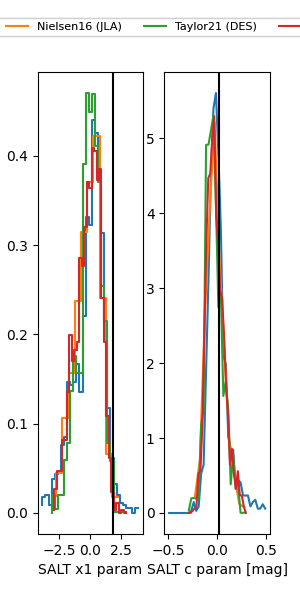

FINK: ZTF25abmvyar
Lasair: ZTF25abmvyar
ALeRCE: ZTF25abmvyar
TNS: 2025wrs
YSE: 2025wrs
ZTF25abmvyar (ztf,fink)
2025wrs (tns,yse)
equatorial (ra, dec) = (329.4932,+26.04706)
galactic (l, b) = (81.0757,-22.39950)


last ztfg=19.77, ztfr=19.89
4 ztfg, 2 ztfr detections